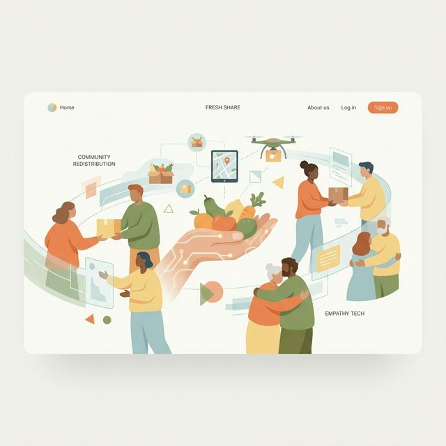

Reduce food waste and feed the needy using intelligent technology. Connect restaurants, households, and hostels with NGOs seamlessly.
Meals Saved
Active Donors
NGO Partners

Leveraging cutting-edge AI to make food donation efficient, transparent, and impact-driven.
Restaurants and hosts can instantly log excess food. Notifications hit the network the second food becomes available.
Our intelligent algorithms match perishable food donations with the nearest NGOs that need precisely what you have, minimizing travel time.
Track volunteers picking up the food in real-time. Full transparency from the moment it leaves your premises until it reaches the hungry.
Dedicated portals for NGOs to manage their needs, accept donations instantly, and coordinate volunteer fleets efficiently.
of all food produced globally is wasted.
While billions of tons of perfectly edible food end up in landfills, millions of people go to bed hungry every night. This is a logistics problem, not a supply problem.
Cannot easily predict demand, leading to massive nightly surplus with no quick way to donate before spoilage.
Struggle to locate available food nearby in real-time, missing out on crucial opportunities to stock their kitchens.
By connecting donors directly with NGOs through smart algorithms, we ensure zero good food goes to waste.
Join thousands of restaurants, individuals, and NGOs making a difference today.